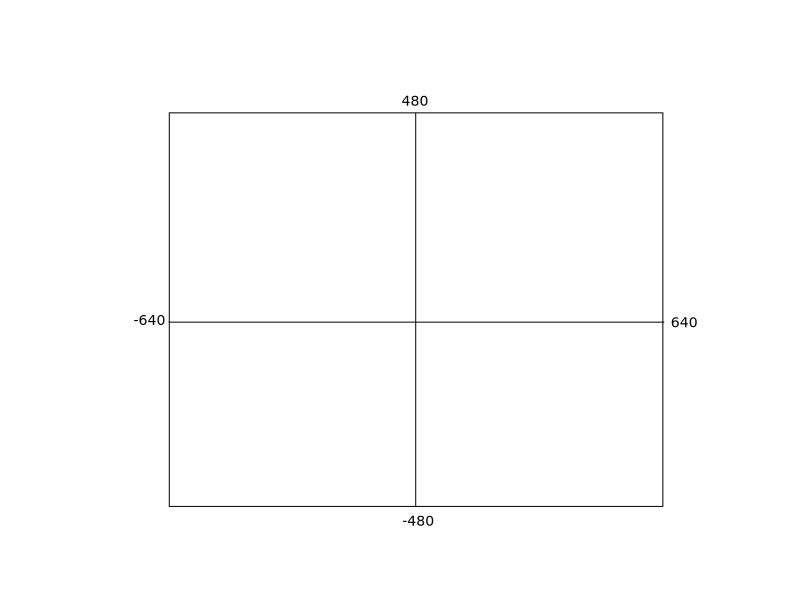

Purely Functional Browser Games
I made this game a while back. This article is a rough summary of how I did it.
Preliminaries
This article assumes some basic familiarity with Clojure, leiningen, Clojurescript, and the browser programming environment, i.e. what the DOM is and whatnot. It also assumes high school math knowledge, though I won't be going into too much detail into the math bits. Finally, this article is mostly aimed at people who are somewhat familiar with clojure, but aren't quite sure how one would structure a game using purely functional data structures.
This is where you can find the main source of the final game. I won't be covering the development of the entire game, just covering the basic principles that guided it. If you'd like to follow along, you can clone the figwheel-test parent repository. I'd also highly suggest figuring out how to get figwheel and a clojurescript browser REPL working within your development environment of choice.
If you are following along, you'll want to start off in a namespace such as the following:
(ns figwheel-test.turret-walkthrough (:require [figwheel-test.common :refer [tau canvas ctx fooprint init-elements scale-factor with-viewport on-space] :as com] [figwheel-test.geometry :as g] [figwheel-test.canvas :as c]) (:require-macros [figwheel-test.macros :as m]))
Blank Slate
OK so let's say you've got figwheel up and running, and you're now connected to http://localhost:3449/ and staring at a blank screen. Terrifying, huh? Let's fill that soul-devouring void with something more comfortable.
The code for doing this is in the figwheel-test.common namespace, which is where I put all the miscellaneous common code that I use across all my games. I use a library called Hipo to make my DOM elements, though I probably didn't really need it. It basically uses macros to translate hiccup syntax into DOM elements, which can then be stuck into variables like I've done here.
Anyway the main thing we care about here is calling the function
(com/init-elements)
from our REPL, which will give us a canvas with a border around it.
Questions
What is a game, anyway? Well, the fundamental structure of every game is pretty simple. You have some sort of piece of information that describes the game world, or "state." Then you have a function that creates and returns a new world, based on a combination of whatever the current world is and any user inputs. This basic model of a game works for everything from tic-tac-toe to DOOM and beyond.
Game = (World, UserInputs) -> World
That's it! Sounds easy, right? Well, I lied, there's actually a bit more to it. One thing is when we actually need to update the state. This will depend on what sort of game you're making. For a tic-tac-toe game, for example, you'll only need to update the game state when a user actually clicks on something. For a game like the one we'll be making here, though, the game world will have to get updated all the time, even if the player isn't necessarily doing anything (you could think of this as counting the passage of time as a user input).
Another thing is, in order for most people to make sense out of the world state, we're going to need to visualize it for them instead of just showing them the raw data. So we need some sort of function that takes a world state and draws it.
All that said, this is Clojure, damnit, so we're going to worry about the important part first: data. Which is what our world will be composed of.
I Threw It On The Ground
Making an entire world sounds like a lot of work, and it is. Fortunately we don't have to do it all at once, we can just incrementally add bits and pieces to the world as we see fit. When I made this game I decided to start with the ground.
The ground, in our case, is just a list of x-y coordinates. For the purposes of my game, I'm assuming there's no weird things like gaps in our terrain, or extra terrain in the sky, or whatever. The way we're actually going to think of the terrain is as a list of points, with line segments connecting them. So our world right now might look something like this:
(def init-state {:terrain [[-640 -300] [-320 -215] [0 -215] [320 -215] [640 -300]]})
Now you'll notice that I've chosen -640 and 640 as my x-coordinates for the first and last
points, respectively. That's because I've decided that the boundaries of the game world
are going to look something like this:

As far as our game is concerned, anything that leaves these boundaries is dead to us. We'll be enforcing that later once we deal with the parts of the game that actually move.
Note that these are game-world coordinates, not screen coordinates. We actually aren't really going to care much about screen coordinates at all in this article, other than to note that they're not the same thing.
Different Strokes
So, now we have the first part of our world ready. Normally we'd say the next step is to write some sort of update function, but as it turns out the ground isn't really going to change much (for now). So instead we're going to skip that and just go straight to drawing this part of our world.
(defn draw-state [state] (with-viewport #(apply c/stroke-lines ctx (:terrain state)) true))
Here we've introduced some new utility functions. First, with-viewport basically does all the work of transforming the HTML5 canvas coordinate system into one compatible with the game coordinate system, and then calls a passed-in function which will do the whatever drawing operations need to be done. Once that function is done, it then restores the canvas coordinate system to its original state, which can be useful if you want to do other stuff in the "normal" coordinate system (we don't, in this game, but whatever). with-viewport also takes a "clear" argument that erases the canvas before drawing if true, which is what we happen to want right now.
Next we have c/stroke-lines, which pretty much just takes a bunch of points and draws lines between them. That function is part of the figwheel-test.canvas namespace, which is where I put most of my general drawing-related functions.
Now we can see what our world looks like:
(draw-state init-state)
Just Turret Things
As of now we don't actually have anything we can control yet. We just have land. Pretty boring. Let's add some player state to the mix.
(def init-state {:terrain [[-640 -300] [-320 -215] [0 -215] [320 -215] [640 -300]] :player {:th 0 :pos [0 -200]}})
This contains the bare minimum for what we would want out of a turret: an angle th (short for theta or θ) which represents where the turret is aiming, and a position pos which just represents where the turret is sitting.
What would an update function for this turret look like? Maybe something like this:
(defn turret-update [{:keys [th pos] :as self} pointer] (let [dir (g/v- pointer pos)] (assoc self :th (g/vec-angle dir))))
The pointer argument, in this case, would be the current mouse location, translated into world coordinates. All this state function does is update the turret's angle based on where the cursor is. This is a perfectly reasonable place to start, but it's kind of boring. Let's make things hard for the player by giving the turret some mass, so it takes a non-zero amount of time to swivel to the aiming point.
Side note: the g namespace here refers to the figwheel-test.geometry namespace, which is where I put all of my common geometry-related functions. v- subtracts one vector from another, and vec-angle returns the angle that a particular vector makes with the x-axis.
In order to make this happen, we'll have to add some stuff to the turret state. Because the turret will no longer be instantly following the pointer, we'll need to add an angular velocity, which will determine how far to move each frame. Then we'll need to somehow update this angular velocity based on user input.
We'll call this angular velocity w (easier to type than ω). We'll also introduce two other terms, b and k, which I'll explain in a bit.
(def init-state {:terrain [[-640 -300] [-320 -215] [0 -215] [320 -215] [640 -300]] :player {:th 0 :w 0 :pos [0 -200] :k 0.02 :b 0.15}})
And of course, we'll have to modify the update function:
(defn turret-update [{:keys [th pos w k b] :as self} pointer] (let [dir (g/v- pointer pos) er [(js/Math.cos th) (js/Math.sin th)] delta (js/Math.atan2 (g/vcross er dir) (g/vdot er dir)) new-w (+ w (* k delta) (* -1 w b)) new-th (+ th w)] (-> (assoc self :th (com/clamp 0 new-th (/ tau 2))) (assoc :w (if (or (< new-th 0) (> new-th (/ tau 2))) 0 new-w)))))
Huh, what's going on here? Well, what I've done here is to model the turret's angular velocity as being updated using feedback control. I won't go into too much detail about the math here, but basically, k controls how quickly the turret will snap into place, and b will suppress the "overshoot" that will inevitably occur otherwise. k and b don't technically have to be part of the turret state, as they never really change. However, in future iterations of the game, they could be made to change via a powerup or perhaps when damage has been taken.
Another area of note is the delta variable, which computes the difference between the desired angle of aim (i.e. whatever th should be in order to point at pointer) and the actual point of aim. Some vector math knowledge is needed to make sense of that, for which I defer to wikipedia[1][2].
Finally, note that I clamp the new value of th to within a certain range, because the turret has a finite range of travel. I also force w to 0 if th is about to leave that range.
OK, so now we have some sort of update function for the turret. But what does this thing even look like?
Well, I could draw something fancy, or I could just stick some circles and lines together. Let's just stick with the second option.
(defn turret-draw [{:keys [th pos]} ctx] (c/with-saved-context ctx (fn [] (let [[x y] pos] (.translate ctx x y) (c/with-saved-context ctx (fn [] (.rotate ctx th) (c/stroke-lines ctx [20 -3] [20 3] [40 3] [40 -3] [20 -3]))) (set! (.-fillStyle ctx) "#fff") (.beginPath ctx) (.arc ctx 0 0 30 (/ tau -12) (/ (* 7 tau) 12)) (.lineTo ctx (* 15 (js/Math.sqrt 3)) -15) (.fill ctx) (.stroke ctx)))))
The use of HTML5 Canvas operations is a bit out of the scope of this article, so I'll just direct you to the MDN Canvas Tutorial.
Of course, now we'll have to update our whole-world drawing function, draw-state:
(defn draw-state [state] (com/with-viewport #(do (apply c/stroke-lines com/ctx (:terrain state)) (turret-draw (:player state) com/ctx)) true))
Here's what (draw-state init-state) should look like now:

Putting It All Together
It's about time that we get to see some of this state-updating in action. The way we'll do this is pretty simple, it's conceptually just a continuously updating loop. First we'll set up some preliminary bits:
(def stop (atom false)) (def state (atom init-state)) (def pointer (atom [1 0])) (defn screen->world [p] (let [[x y] (g/v- (g/vscale (/ 1 (scale-factor)) p) [640 480])] [x (- y)])) (defn update-state [state pointer] (update state :player turret-update pointer))
stop is going to be used for when we want to stop the game loop. state is where we'll be storing the current game state. pointer will hold the current location of the mouse pointer. screen->world is a utility function that will be used to convert canvas pixel coordinates, which is what we'll be getting from the javascript mouse movement API, into game world coordinates. Finally, update-state is the "toplevel" state updating function that will be used to handle the entire game world update, of which the turret is just a part of.
Here's the function that will actually set the game loop running:
(defn run-loop [] (reset! stop false) (set! js/window.onmousemove (fn [evt] (reset! pointer (-> [(.-pageX evt) (.-pageY evt)] (g/v- (c/elem-offset canvas)) screen->world)))) ((fn lp [] (when (not @stop) (draw-state @state) (swap! state update-state @pointer) (js/window.requestAnimationFrame lp)))))
The first part of the function just makes sure that stop is false, and sets up the javascript event handler needed to keep pointer up to date. For the actual "loop", we use a named fn which just checks to see if we should stop, draws the current state, updates the current state using update-state, and then reschedules itself to run again, using js/window.requestAnimationFrame. Finally we call the lp fn within run-loop in order to actually start the updating process.
Note that there's no really good reason for doing the actual loop within a nested function as opposed breaking it out into its own function. This is just how I decided to do it.
Take a moment to play with the turret aiming. When you're done, you can execute
(reset! stop true)
to pause things and let your computer relax for a bit.
Bullets! My Only Weakness
We have a turret now, but of course a turret that doesn't shoot any bullets isn't very useful. So let's add some bullets.
(def init-state {:terrain [[-640 -300] [-320 -215] [0 -215] [320 -215] [640 -300]] :player {:th 0 :w 0 :pos [0 -200] :k 0.02 :b 0.15} :bullets {}})
We've added a new key to the game world - :bullets. I decided to store the set of all active bullets within the game world using a map, so I've set it to an empty map in init-state.
What exactly is that map going to map between? Well for my particular game I decided to assign each bullet a unique ID, which is used for all operations that need to reference a particular bullet. So :bullets maps between bullet IDs and an individual bullet's state.
An individual bullet only really needs to pieces of information - a position and a velocity. Here I've referred to them using the keys :x and :v. Let's take a first crack at what an update function for an individual bullet would look like.
(def gravity [0 -0.1]) (defn bullet-update [state name {:keys [x v] :as self}] (assoc-in state [:bullets name] (-> self (update :v g/v+ gravity) (update :x g/v+ v))))
Why does this function take the entire game state as its first argument, and then an ID and a single bullet state as other arguments? Well as it turns out we'll need the entire state in order to do certain operations on an individual bullet, such as checking for collisions with terrain or other targets. Also, it turns out that there's a really convenient clojure library function that will make updating every bullet in the game world simple.
Anyway, aside from the particularities of its arguments, all this function does is add gravity to a bullet's current velocity, and also updates the position using the bullet's current velocity.
This is a decent start, except for the fact that this bullet basically sticks around forever. There's plenty of good reasons for a bullet to stop existing, like if it leaves the screen, or if it hits the ground, or hits some other target. Right now we don't actually have other targets, though, and checking for hitting the ground is a bit more complicated, so let's just handle the simplest case - checking if the bullet has left our declared world boundaries.
(defn bullet-update [state name {:keys [x v] :as self}] (if (let [pos x [x y] pos] (or (> (js/Math.abs x) 640) (> (js/Math.abs y) 480))) (update state :bullets dissoc name) (assoc-in state [:bullets name] (-> self (update :v g/v+ gravity) (update :x g/v+ v)))))
We could add the terrain check while we're at it, but if you're impatient like me, you really just want to start seeing some bullets fly around. We'll have to draw the bullets, of course:
(defn bullet-draw [{:keys [x v]} ctx] (c/stroke-lines ctx x (g/v- x v)))
(defn draw-state [state] (com/with-viewport #(do (apply c/stroke-lines com/ctx (:terrain state)) (turret-draw (:player state) com/ctx) (run! (fn [[n x]] (bullet-draw x ctx)) (:bullets state))) true))
Update ALL The THINGS
So we now have a place in our game state to hold all of our bullets, and we have a function that will do the update needed for a single bullet. Now we just need to iterate over every bullet and update it.
There's a bunch of ways to write this accumulation in clojure. The way I chose to do it, however, uses a handy function from the clojure standard library called reduce-kv. The primary advantage of using reduce-kv over any other reduce-like thingamabobber is that, when called on a map, reduce-kv will do a loop over said map without creating any intermediate sequence, as opposed to just plain reduce, which will convert the map to a lazy sequence first. It's a small performance benefit, but it's not one that's particularly difficult to take advantage of.
As it turns out the arguments I've made bullet-update take are already perfect for use with reduce-kv. All we have to do is pass it in as our reducing function, and then incorporate it into our top-level state update function:
(defn update-state [state pointer] (reduce-kv bullet-update (update state :player turret-update pointer) (:bullets state)))
This works fine, but because I happen to know that I'll be doing a bunch of similar operations on other groups of objects (the enemies that appear in the completed game, and the particle bits), I use this simple helper function:
(defn update-all [state key update-fn] (reduce-kv update-fn state (key state)))
This helper function has the side benefit of making it possible to use the thread-first macro (->), which is useful once we start stacking on other state modifications:
(defn update-state [state pointer] (-> (update state :player turret-update pointer) (update-all :bullets bullet-update)))
Now we can try running the game with the bullet update in place, using (run-loop) again. While the game is running, you can try adding a bullet to the game state:
(swap! state update :bullets assoc 0 {:x [0 -200] :v [0 15]})
This should send a bullet straight up and off the screen. Neat, huh?
Let's wrap this whole "add a bullet to the world" thing into a function:
(def gen-id (let [n (atom 0)] (fn [] (swap! n (fn [x] (mod (+ x 1) 100000))))))
(defn spawn-bullet [state th pos] (let [dir (g/unit-vector th)] (update state :bullets assoc (gen-id) {:x (g/v+ pos (g/vscale 50 dir)) :v (g/vscale 15 dir)})))
Some quick things to note here: g/unit-vector creates a vector of length 1 pointed at some given angle. The (g/v+ pos (g/vscale 50 dir)) term is based on the fact that the turret's gun ends at a radius 50 away from the center of the turret (which is where pos) is. Finally, gen-id is what we use to make new ID's for bullets and other temporary things.
Cooldown
So, now that we know how to add a bullet to the world, let's start using it. First things first, though, we need to deal with a new user input - whether the mouse is being held down or not.
(def trigger (atom false))
(defn run-loop [] (reset! stop false) (set! (.-onmousedown canvas) (fn [] (reset! trigger true) false)) (set! (.-onmouseup js/window) (fn [] (reset! trigger false) false)) (set! js/window.onmousemove (fn [evt] (reset! pointer (-> [(.-pageX evt) (.-pageY evt)] (g/v- (c/elem-offset canvas)) screen->world)))) ((fn lp [] (when (not @stop) (draw-state @state) (swap! state update-state @pointer @trigger) (js/window.requestAnimationFrame lp)))))
(defn update-state [state pointer trigger] (-> (update state :player turret-update pointer trigger) (update-all :bullets bullet-update)))
You'll notice I've added two lines to the setup code in run-loop. These basically just keep the trigger variable up to date as to whether the mouse is currently down or not. Also notice that update-state now takes an extra trigger argument, which is passed on to turret-update.
Note: at this point, if you currently have the game running, you'll probably want to stop it (again using (reset! stop true)).
So. What is turret-update going to do with that trigger argument? Well, obviously once the trigger is down it should add a bullet to the world. If we do that every frame, though, we'll be spawning 60 bullets per second, which is a lot. Let's add a cooldown parameter that will determine whether we can actually shoot yet.
(def init-state {:terrain [[-640 -300] [-320 -215] [0 -215] [320 -215] [640 -300]] :player {:th 0 :w 0 :pos [0 -200] :k 0.02 :b 0.15 :cooldown 0} :bullets {}})
In my game, I've defined things such that when :cooldown is equal to 0, the turret is ready to fire. If we're firing, which requires cooldown to be 0 and the trigger to be pulled, we'll set :cooldown to however many frames we want between shots, and then decrement it every frame until we get to zero:
(defn turret-update [{:keys [th pos w k b cooldown] :as self} pointer trigger] (let [dir (g/v- pointer pos) er [(js/Math.cos th) (js/Math.sin th)] delta (js/Math.atan2 (g/vcross er dir) (g/vdot er dir)) new-w (+ w (* k delta) (* -1 w b)) new-th (+ th w) firing (and trigger (= cooldown 0))] (-> (assoc self :th (com/clamp 0 new-th (/ tau 2))) (assoc :w (if (or (< new-th 0) (> new-th (/ tau 2))) 0 new-w)) (assoc :cooldown (if firing 5 (max (dec cooldown) 0))))))
Dandy! Except now we have a problem: how do we spawn the actual bullet when firing? As it turns out, turret-update is going to need to be able to write to other parts of the game world, not just itself.
(defn turret-update [state path pointer trigger] (let [{:keys [th pos w k b cooldown] :as self} (get-in state path) dir (g/v- pointer pos) er [(js/Math.cos th) (js/Math.sin th)] delta (js/Math.atan2 (g/vcross er dir) (g/vdot er dir)) new-w (+ w (* k delta) (* -1 w b)) new-th (+ th w) firing (and trigger (= cooldown 0))] (assoc-in (if firing (spawn-bullet state th pos) state) path (-> (assoc self :th (com/clamp 0 new-th (/ tau 2))) (assoc :w (if (or (< new-th 0) (> new-th (/ tau 2))) 0 new-w)) (assoc :cooldown (if firing 5 (max (dec cooldown) 0)))))))
So, now turret-update takes the whole game state as an argument. I've also added a new path argument, which tells turret-update where to find the particular turret that we're dealing with. This is just in case we want to have multiple turrets or something in the future, or maybe if we just want to be able to rearrange the location of the turret information within the game state. path is used as an argument to both get-in and assoc-in, for reads and writes, respectively.
Other than the path change, the rest of the function is relatively unchanged, other than adding the bit that uses spawn-bullet on the state if we're firing.
We've added something to the initial state, so in order to keep things completely safe, we'll probably want to reinitialize the state atom:
(reset! state init-state)
Other than that, we should be ready to rip. Just call (run-loop) again and fire away.
Conclusions
This article is pretty damn long-winded already so I'll try and keep this short. Hopefully this is enough to get you started on understanding the rest of the code (other than the math bits, for which I refer you to Wikipedia or something). If there's sufficient interest I may cover some other parts of the code in greater detail.
As for other conclusions, I'd just like to say that the interactive development environment that clojurescript provides is friggin' great, and that you shouldn't be afraid of immutability. All the things you know about manipulating data in clojure still apply in game-land.
Happy hacking!